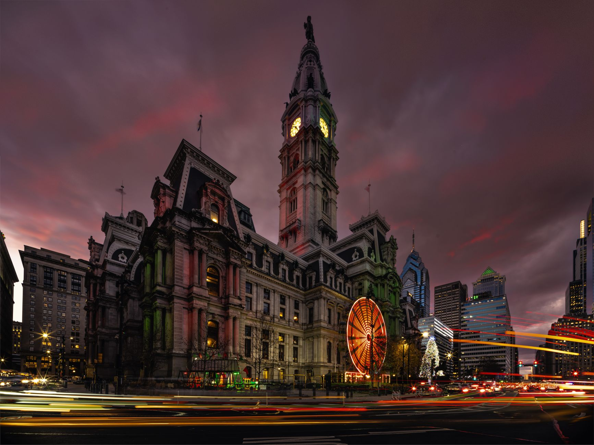

The Phillies refused to let the game end
Philadelphia entered the bottom of the ninth trailing the Cardinals by four runs, leaving very little room for error. With two outs recorded, the situation looked even more difficult. St. Louis needed only one more out to finish the game, while the Phillies had to string together multiple productive at-bats against a defense expecting to celebrate.
Instead, Philadelphia kept the inning alive and steadily applied pressure. The rally grew from a desperate attempt to avoid defeat into a genuine chance to win. The Phillies delivered the hits, reached base, and took advantage of every opening until the final run crossed the plate. The dramatic finish extended their winning streak to nine games.
Down four with two outs in the ninth, Philadelphia transformed a near-loss into its ninth straight victory.
A six-run ninth inning changed everything
The defining moment was not one isolated swing but the collective quality of the entire inning. Philadelphia’s hitters refused to give away at-bats, forcing the Cardinals to defend every pitch and every base. Once the first runners reached, the pressure shifted quickly to St. Louis, which could no longer rely on a simple strikeout or routine ground ball to escape.
The Phillies continued to move the line forward until the deficit disappeared. Their six-run explosion in the ninth erased the Cardinals’ lead and gave the home team a walk-off finish. It was the type of inning that can change how both clubs view a game: Philadelphia gained confidence from an improbable comeback, while St. Louis was left to consider how a seemingly secure result slipped away.
Why the win matters for Philadelphia
A nine-game winning streak is important beyond the number itself. It shows that the Phillies are finding ways to win in different conditions, including games when their offense is quiet for most of the afternoon or when the bullpen must protect a narrow lead. This comeback added another category to that list: winning after appearing to be out of time.
Late comebacks can also strengthen a clubhouse. Players learn that the next baserunner, quality plate appearance, or defensive play may keep a game alive. That belief is especially valuable over a long MLB season, when teams face repeated close games and must recover quickly from setbacks. Philadelphia’s rally provided both momentum and a reminder that its lineup remains dangerous until the final out.
The Cardinals paid for a late breakdown
For St. Louis, the loss was particularly painful because the Cardinals had controlled the game for most of the way. A four-run advantage with two outs in the ninth normally represents a strong path to victory. Once Philadelphia began reaching base, however, the Cardinals could not stop the inning before it became a full-scale collapse.
The defeat highlights the fine margins of late-inning baseball. One missed location, an extended at-bat, or a defensive miscue can create another opportunity for the opposing lineup. The Phillies took advantage of those chances, while the Cardinals were unable to close the door. The result was not merely a blown save; it was a complete reversal that handed Philadelphia another memorable win.
What the rally says about the Phillies
The comeback reinforces Philadelphia’s identity as a team that can combine patience, power, and relentless pressure. Even while trailing, the Phillies did not need every hitter to produce a home run. They needed traffic on the bases and enough quality contact to keep the inning moving. That approach made the rally possible and showed why opponents cannot relax against the lineup.
The Cardinals game will likely remain one of the most memorable victories of the streak because of the timing and the deficit. Philadelphia was down to its final out, yet still found a way to win at home. Baseball fans looking for more coverage of dramatic MLB storylines can also read “Willson Contreras Blast Headlines Red Sox-Giants News” at https://dhyey.bond/blog/willson-contreras-blast-headlines-red-sox-giants-news/. The Phillies now carry the confidence of nine consecutive wins into their next challenge.
See Also
If you enjoyed this Baseball News article, check out Willson Contreras Blast Headlines Red Sox-Giants News for more useful reading.